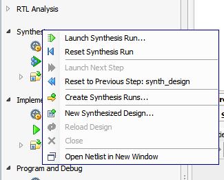

The Flow Navigator provides a simplified view of the Vivado® Design Suite design flow, from managing project sources to generating bitstream files and running the design in hardware. The Flow Navigator provides access to the following major steps in the design flow:
- Project Manager: Access various project management tools, such as the Project Summary window, the Add Design Sources wizard, Language Templates, and the Vivado IP Catalog. These tools offer a summary view of the design, provide information on the resource utilization for the design, and let you add new design sources from the file system or from the IP Catalog.
- IP Integrator: Create complex subsystem designs for inclusion in a higher level design or standalone design. You can use the commands in this section to create a new block design, open an existing block design, or generate the output products required to support the block design. Refer to the Vivado Design Suite User Guide: Designing IP Subsystems Using IP Integrator (UG994) for more information.
- Simulation: Launch the Vivado simulator or an integrated third-party simulator to perform behavioral, functional, or timing simulation of the design. Refer to the Vivado Design Suite User Guide: Logic Simulation (UG900) for more information.
- RTL Analysis: Open the RTL design in an elaborated netlist to provide early exploration and analysis of the different design elements. From this section, Flow Navigator provides access to commands for running design rule checks, reporting noise analysis, or viewing a schematic representation of the design. Refer to this link in the Vivado Design Suite User Guide: System-Level Design Entry (UG895) for more information.
- Synthesis: Create and launch synthesis design runs, or open and analyze the synthesized design. You can also open the Timing Constraints wizard and edit constraints. You can add debug cores into your synthesized design and perform analysis on the design. Refer to the Vivado Design Suite User Guide: Synthesis (UG901) for more information.
- Implementation: Configure implementation settings. You can create and launch implementation design runs to place and route the netlist onto the target device or board. You can also access a variety of analysis tools for the placed and routed design. Refer to the Vivado Design Suite User Guide: Implementation (UG904) for more information.
- Program and Debug: Generate the bitstream file to program the hardware device with the implemented design, and open the Vivado hardware manager to debug the design in physical devices. Refer to the Vivado Design Suite User Guide: Programming and Debugging (UG908) for more information.
|
In the Flow Navigator, you can double-click each step heading to expand or collapse the step. This lets you hide the details of the design flow, while still getting the overall picture. Each step of the design flow also provides a menu of setup and analysis commands for the design. Right-click the step heading to open a menu of commands you can use to configure the design for that step of the design flow. |
 |
You can hide the Flow Navigator to free up some of the application display area by clicking the Toggle the Display command () in the upper right corner of the Flow Navigator. When it is not displayed, the Flow Navigator appears as a tab in the upper left side of the Vivado IDE. Click this tab to reopen the Flow Navigator window.
See Also
| Vivado Design Suite User Guide: Using the Vivado IDE (UG893), Flow Navigator | |
 |
Vivado Design Suite QuickTake Video: Vivado Design Flows Overview |